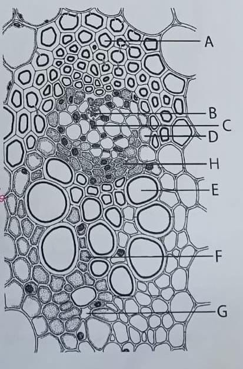
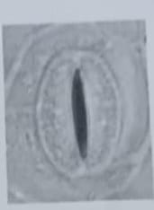
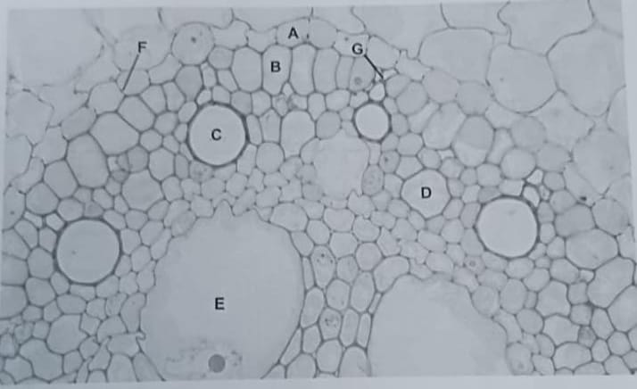
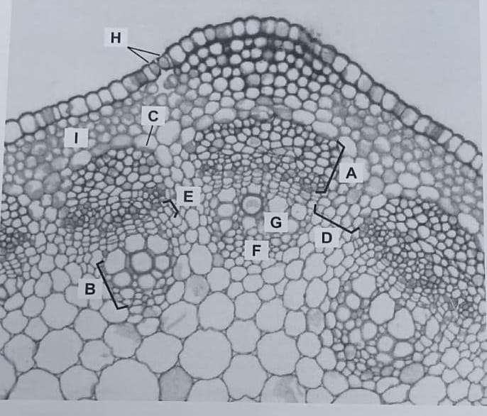

| Tecido simples | Função | Características da parede celular | Células vivas ou mortas na maturidade? | Meristema de origem |
|---|---|---|---|---|
| Parênquima | ||||
| Colênquima | ||||
| Esclerênquima |

A. A letra A aponta as (nome do tipo celular) já que apresentam paredes espessadas secundárias. Fazem parte do (nome do tecido), um tecido complexo.
B. A letra G parece indicar um (tipo celular), com um provável espessamento (tipo de espessamento), já que não vemos o espessamento da parede na imagem porque o plano de corte passou pela parede primária.
C. A letra F aponta para o (tipo celular), pertencente ao (nome do tecido).
E. A letra B indica um (tipo celular) do (nome do tecido), já que podemos ver os poros ou crivos na parede primária terminal. Já a letra C indica uma (tipo celular).
F. O feixe vascular ao lado é do tipo , já que a letra H aponta o câmbio fascicular.
G. Todas as células representadas neste desenho detalhado (exceto as não pertencentes ao feixe vascular) são originadas da atividade e diferenciação do (nome do meristema).

A epiderme foliar de órgãos aéreos apresenta os conhecidos 'complexos estomáticos', formados por duas , as quais definem uma abertura interna ou . A cutícula, por sua vez, delimita uma outra abertura, mais externa, denominada . Em nossas atividades práticas, é comum ver a imagem, ao lado, nas preparações histológicas. Por isso, executamos um procedimento que evita este tipo de imagem. Como é explicada, em poucas palavras, a imagem ao lado?

A. A imagem mostra a seção transversal de um(a) (nome do órgão) com crescimento .
B. A letra A está indicando o(a) , caracterizado(a) por apresentar uma típica impregnação de em forma de anel ou "cinta", a chamada (indicada pela letra F). Isso impede o transporte . Finalmente, a camada indicada pela letra A é originada da diferenciação do (nome do meristema).
C. Pela posição relativa de G, C e E, o órgão mostrado na figura tem uma diferenciação do (nome do tecido).
D. A letra E indica um (tipo celular) pertencente ao (nome do tecido), ainda em diferenciação (é uma célula viva).
E. A letra B está indicando o , camada que delimita os tecidos vasculares. É originado(a) da diferenciação do (nome do meristema).
F. A letra D está indicando um (tipo celular), pertencente ao (nome do tecido).
G. Além da protoderme, qual outro meristema (primário ou secundário) não originou nenhum dos tecidos mostrados na imagem?

A. A imagem mostra a seção transversal de um(a) (nome do órgão) com crescimento predominantemente .
B. A letra C está indicando o(a) , caracterizado(a) por apresentar armazenamento de , os quais estão envolvidos no geotropismo (como os encontrados na coifa).
C. Pela posição relativa de F e G, o órgão mostrado na figura tem uma diferenciação do (nome do tecido).
D. A letra E indica o , enquanto que a letra D aponta a região cujas células irão ser induzidas (por E) a se transformar em um .
E. A letra B está indicando o (nome do tecido), enquanto a letra A indica o (nome do tecido). Ambos são predominantemente originados da atividade do (nome do meristema), um meristema .
F. A letra C corresponde à última camada do sistema (tipos celulares). Sob o tecido do qual fazem parte, está a zona cortical, com um importante tecido, indicado por I, denominado (nome do tecido), o que é um tecido .
Insira os números de 1 a 10 nos parênteses:
A. () Identificada pela posição relativa do xilema. É a face ventral da folha.
B. () Folha com estômatos apenas na face abaxial.
C. () Identificada pela posição relativa do floema. É a face dorsal da folha.
D. () Folha apresentando dois tipos de parênquimas distintos em cada face foliar.
E. () Última camada do mesofilo que circunda o feixe vascular (nervura foliar). Pode, também, ser chamada de endoderme.
F. () Região compreendida abaixo do sistema dérmico da folha, excluindo-se o sistema vascular.
G. () Folha com estômatos apenas na face adaxial.
H. () Típicas em Poaceae (gramíneas), permitem enrolamento ou dobramento do limbo foliar quando em condições de estresse hídrico.
I. () Folha apresentando um mesofilo organizado na forma de um mesmo parênquima nas faces adaxial e abaxial e, na zona mediana do mesofilo, um parênquima distinto.
J. () Folha com estômatos presentes nas faces adaxial e abaxial.
A. () Flores gamocarpelares originam frutos simples, enquanto flores dialicarpelares frutos agregados. Já os frutos múltiplos são originados de mais de uma flor (inflorescências).
B. () Flores gamocarpelares originam frutos compostos, enquanto flores dialicarpelares simples. Já os frutos múltiplos são originados de mais de uma flor (inflorescências).
C. () Os frutos derivados de flores monocarpelares (com apenas um carpelo) quando deiscentes, podem se abrir ao longo da sutura carpelar ou ao longo da nervura. Nesse caso, os frutos recebe denominações diferentes.
D. () Flores dialicarpelares originam frutos múltiplos, enquanto flores gamocarpelares formam frutos agregados. Já os frutos compostos são originados de mais de uma flor (inflorescências).
E. () Frutos agregados podem compreender frutículos carnosos ou secos e são sempre originados de flores dialicarpelares.
F. () Frutos derivados de um único pistilo serão sempre frutos originados de um único carpelo.
G. () Frutos derivados de um único pistilo serão sempre frutos simples.
H. () Frutos secos sempre serão deiscentes.